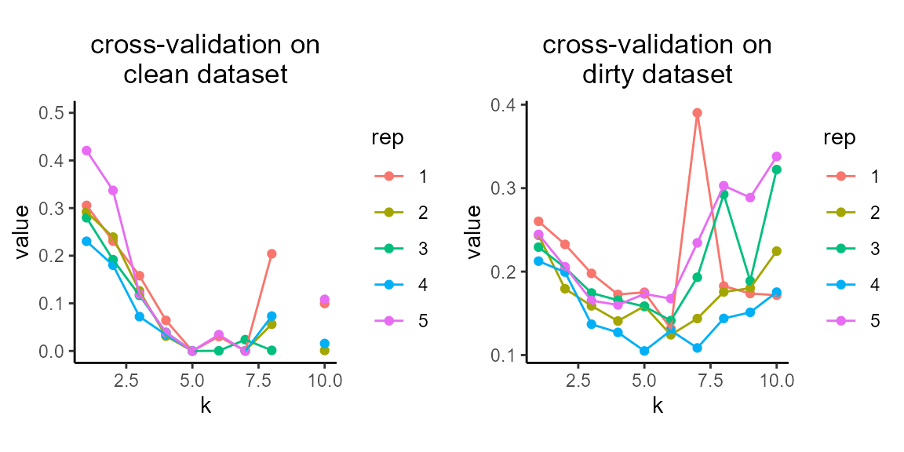
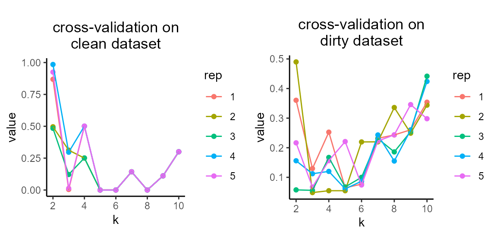

Getting Started with NMF
Zach DeBruine
2021-10-22
Source:vignettes/getting_started.Rmd
getting_started.RmdThis vignette demonstrates basic usage of the RcppML::nmf function and visualization of the results.
Install RcppML
Install the RcppML R package from CRAN or the development version from GitHub.
Also install the accompanying Machine Learning datasets (MLdata) package:
install.packages('RcppML') # install CRAN version
# devtools::install_github("zdebruine/RcppML") # compile dev version
devtools::install_github("zdebruine/MLdata")What is NMF?
Non-negative Matrix Factorization (NMF) finds additive signals in non-negative data in terms of the features and samples associated with those signals.
NMF gives an approximation of an input matrix as the cross-product of two low-rank submatrices:
\[A = wdh\]
Here, \(A\) is the input matrix, \(w\) is a tall matrix of features in rows and factors in columns, and \(h\) is a wide matrix of factors in rows and samples in columns.
RcppML::nmf introduces one more important component into this system, a scaling diagonal, \(d\). This scaling diagonal provides:
- consistent factor scalings throughout model fitting
- robustness across random restarts
- symmetry in factorization of symmetric matrices
- a means for convex L1 regularization
Running NMF
Run NMF on the iris dataset. We need to specify a rank (k) for the factorization, and will also specify the seed for random initialization for reproducibility:
library(RcppML)
library(Matrix)
library(MLdata)
library(ggplot2)
library(cowplot)
data(iris)
model <- nmf(iris[,1:4], k = 3, seed = 1)
model
#> 150 x 4 x 3 factor model of class "nmf"
#> @ w
#> nmf1 nmf2 nmf3
#> [1,] 0.0014403134 0.0002357974 0.0147753897
#> [2,] 0.0024259960 . 0.0129176731
#> [3,] 0.0014543773 0.0001794741 0.0134988417
#> [4,] 0.0019489186 0.0005632185 0.0124668937
#> [5,] 0.0001151302 0.0015972125 0.0148072020
#> [6,] . 0.0030264275 0.0151420941
#> [7,] . 0.0022133280 0.0132919365
#> ...suppressing 143 rows
#>
#> @ d
#> 747.8924 726.0631 605.7889
#>
#> @ h
#> Sepal.Length Sepal.Width Petal.Length Petal.Width
#> nmf1 0.426857790 0.123598613 0.355488027 0.094055570
#> nmf2 0.340537544 0.193888276 0.320817305 0.144756875
#> nmf3 0.511768434 0.372576543 0.107677454 0.007977569
#>
#> @ misc
#> List of 4
#> $ tol : num 9.76e-05
#> $ iter : num 14
#> $ runtime: 'difftime' num 0.00800418853759766
#> ..- attr(*, "units")= chr "secs"
#> $ w_init : num [1:3, 1:150] 0.266 0.372 0.573 0.908 0.202 ...Visualizing NMF Models
The result of RcppML::nmf is an S3 object of class nmf. The nmf class has many useful methods:
methods(class = "nmf")
#> [1] $ [ align biplot coerce dim dimnames evaluate
#> [9] head predict prod show sort sparsity subset summary
#> [17] t
#> see '?methods' for accessing help and source codeOne of these useful methods is summary (which in turn has a plot method):
species_stats <- summary(model, group_by = iris$Species)
species_stats
#> group factor stat
#> 1 setosa nmf1 0.06364741
#> 2 versicolor nmf1 0.46947182
#> 3 virginica nmf1 0.46688076
#> 4 setosa nmf2 0.04650387
#> 5 versicolor nmf2 0.31381639
#> 6 virginica nmf2 0.63967974
#> 7 setosa nmf3 0.70431244
#> 8 versicolor nmf3 0.22449607
#> 9 virginica nmf3 0.07119149
plot(species_stats, stat = "sum")
Notice how NMF factors capture variable information among iris species.
The biplot method for NMF (see ?biplot.nmf for details) can compare the weights of different features or samples in two factors:

Random Restarts
NMF is randomly initialized, thus results may be slightly different every time. To run NMF many times, set multiple seeds, and the best model will be returned.
Here we run 10 factorizations at a higher tolerance, and the best model is returned:
model2 <- nmf(iris[,1:4], k = 3, seed = 1:10, tol = 1e-5)
# MSE of model from single random initialization
evaluate(model, iris[,1:4])
#> [1] 0.007247329
# MSE of best model among 10 random restarts
evaluate(model2, iris[,1:4])
#> [1] 0.006100573The second model is slightly better.
L1 Regularization
Sparse factors contain only a few non-zero values and make it easy to identify features or samples that are important.
L1/LASSO regularization is the best method for introducing sparsity into a linear model.
data(movielens)
ratings <- movielens$ratings
model_L1 <- nmf(ratings, k = 7, L1 = 0.1, seed = 123, mask_zeros = TRUE)
sparsity(model_L1)
#> factor sparsity model
#> 1 nmf1 0.6224463 w
#> 2 nmf2 0.8774244 w
#> 3 nmf3 0.6351177 w
#> 4 nmf4 0.5958107 w
#> 5 nmf5 0.8988880 w
#> 6 nmf6 0.2924748 w
#> 7 nmf7 0.4641841 w
#> 8 nmf1 0.6754098 h
#> 9 nmf2 0.2803279 h
#> 10 nmf3 0.6508197 h
#> 11 nmf4 0.7213115 h
#> 12 nmf5 0.4295082 h
#> 13 nmf6 0.9229508 h
#> 14 nmf7 0.9393443 hThe sparsity S3 method for class nmf makes it easy to compute the sparsity of factors, as done above.
Note that mask_zeros = TRUE in the example above. This is because zero-valued ratings are missing, and thus should not be considered during factorization.
In the above example, we regularized both \(w\) and \(h\), however each model can also be regularized separately:
model_no_L1 <- nmf(ratings, k = 7, L1 = 0, seed = 123, mask_zeros = TRUE)
model_L1_h <- nmf(ratings, k = 7, L1 = c(0, 0.1), seed = 123, mask_zeros = TRUE)
model_L1_w <- nmf(ratings, k = 7, L1 = c(0.1, 0), seed = 123, mask_zeros = TRUE)
# summarize sparsity of all models in a data.frame
df <- rbind(sparsity(model_no_L1), sparsity(model_L1_h), sparsity(model_L1_w), sparsity(model_L1))
df$side <- c(rep("none", 14), rep("h only", 14), rep("w only", 14), rep("both", 14))
df$side <- factor(df$side, levels = unique(df$side))
ggplot(df, aes(x = side, y = sparsity, color = model)) +
geom_boxplot(outlier.shape = NA, width = 0.6) +
geom_point(position = position_jitterdodge()) + theme_classic() +
labs(x = "Regularized side of model", y = "sparsity of model factors")
Note how each side of the model is regularized independently.
L1 regularization does not significantly affect model loss:
# L1 = 0
evaluate(model_no_L1, movielens$ratings, mask = "zeros")
#> [1] 6.868603
# L1 = 0.1
evaluate(model_L1, movielens$ratings, mask = "zeros")
#> [1] 7.41899L1 regularization also does not significantly affect model information at low penalties. Here we measure the cost of bipartite matching between two models on a cosine distance matrix for L1 = 0, L1 = 0.01, and L1 = 0.1:
model_low_L1 <- nmf(movielens$ratings, k = 5, L1 = 0.01, seed = 123)
# cost of bipartite matching: L1 = 0 vs. L1 = 0.01
bipartiteMatch(1 - cosine(model_no_L1$w, model_low_L1$w))$cost / 10
#> [1] 0.03932585
# cost of bipartite matching: L1 = 0 vs. L1 = 0.1
bipartiteMatch(1 - cosine(model_no_L1$w, model_L1$w))$cost / 10
#> [1] 0.07304686See ?RcppML::cosine for details on very fast computation of cosine similarity.
In the above code, we computed cosine distance by subtracting cosine similarity from 1, matched on this cost matrix, and divided by 10 to find the mean cosine distance between matched factors. In both cases, factors correspond well.
Thus, regularized RcppML::nmf increases factor sparsity without significantly affecting the loss or information content of the model.
Prediction/Recommendation with NMF
NMF models learned on some samples can be projected to other samples, a common routine in recommender systems or transfer learning.
For instance, we may train a model on movie ratings from many users in the movielens dataset (training users) and predict ratings for the remaining users (test users).
train_users <- sample(1:ncol(ratings), 500)
# remove movies with fewer than 5 ratings in the training set
movies <- which(rowSums(ratings[, train_users]) > 5)
model <- nmf(ratings[movies, train_users], k = 10, mask_zeros = TRUE)
predictions <- predict(model, ratings[movies, -train_users])Now we can assess the ability of our model to predict movie ratings by users in the test set. Because we trained the model with mask_zeros = TRUE, we also need to do the same when calculating mean squared error:
evaluate(new("nmf", w = model@w, d = rep(1, 10), h = predictions), ratings[movies, -train_users], mask = "zeros")
#> [1] 6.683479Cross-validation for rank determination
Cross-validation can assist in finding a reasonable factorization rank. However, like many dimensional reductions, a single “best” rank rarely exists.
We will demonstrate cross-validation using two simulated datasets generated with simulateNMF:
-
data_cleanwill have no noise or signal dropout -
data_dirtycontains the same signal asdata_clean, but with a bit of noise and a lot of dropout
data_clean <- simulateNMF(nrow = 100, ncol = 100, k = 5, noise = 0, dropout = 0, seed = 123)
data_dirty <- simulateNMF(nrow = 100, ncol = 100, k = 5, noise = 0.25, dropout = 0.4, seed = 123)Notice how data_clean contains only 5 non-zero singular values, while data_dirty does not:

We can use RcppML::crossValidate to determine the rank of each dataset. The default method uses “bi-cross-validation”. See ?crossValidate for details.
cv_clean <- crossValidate(data_clean, k = 1:10, seed = 123)
cv_dirty <- crossValidate(data_dirty, k = 1:10, seed = 123)
plot_grid(
plot(cv_clean) + ggtitle("cross-validation on\nclean dataset") + scale_y_continuous(limits = c(0, 0.5)),
plot(cv_dirty) + ggtitle("cross-validation on\ndirty dataset"), nrow = 1)
#> Warning: Removed 9 rows containing missing values (geom_point).
#> Warning: Removed 2 row(s) containing missing values (geom_path).
crossValidate also supports another method which compares robustness of two factorizations on independent sample subsets.
cv_clean <- crossValidate(data_clean, k = 2:10, method = "robust", seed = 123)
cv_dirty <- crossValidate(data_dirty, k = 2:10, method = "robust", seed = 123)
plot_grid(
plot(cv_clean) + ggtitle("cross-validation on\nclean dataset"),
plot(cv_dirty) + ggtitle("cross-validation on\ndirty dataset"), nrow = 1)
For real datasets, it is important to experiment with all cross-validation methods and to explore multi-resolution analysis or other objectives where appropriate.
crossValidate does not support an objective against the mean squared error of imputed missing values because this method is slow, tends to under-estimate the true rank, and does not handle noisy data well.